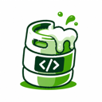

Gatewayby brewkegConnect your tools.
No key yet?
Switch a tool on to point it at brewkeg.
backed up
Restart to apply

Gatewayby brewkegNo key yet?
Switch a tool on to point it at brewkeg.
Restart to apply